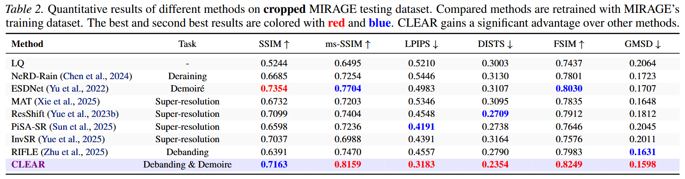
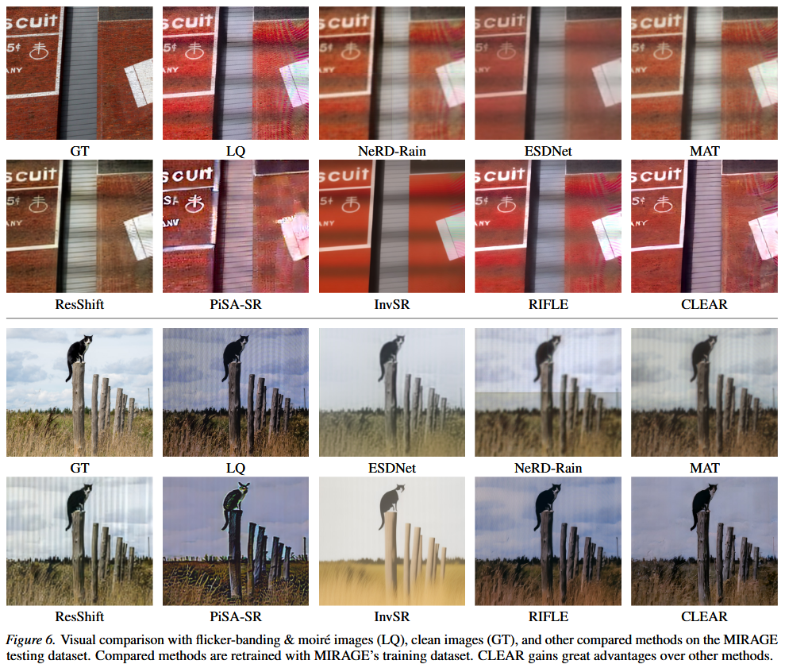
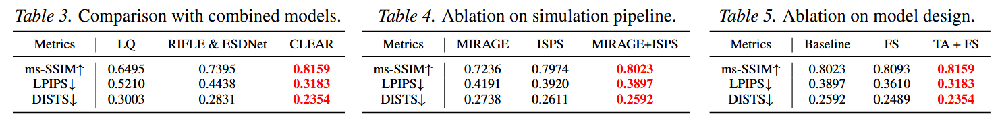

Combined Flicker-banding and Moire Removal for Screen-Captured Images
Joint Flicker-Banding & Moire Removal Results


Abstract
Capturing display screens with mobile devices has become increasingly common, yet the resulting images often suffer from severe degradations caused by the coexistence of moire patterns and flicker-banding, leading to significant visual quality degradation. Due to the strong coupling of these two artifacts in real imaging processes, existing methods designed for single degradations fail to generalize to such compound scenarios.
In this paper, we present the first systematic study on joint removal of moire patterns and flicker-banding in screen-captured images, and propose a unified restoration framework, named CLEAR. To support this task, we construct a large-scale dataset MIRAGE containing both moire patterns and flicker-banding, and introduce an ISP-based flicker simulation pipeline to stabilize model training and expand the degradation distribution. Furthermore, we design a frequency-domain decomposition and re-composition module together with a trajectory alignment loss to enhance the modeling of compound artifacts.
Extensive experiments demonstrate that the proposed method consistently outperforms existing image restoration approaches across multiple evaluation metrics, validating its effectiveness in complex real-world scenarios.
Method
ISP-based Simulation Pipeline (ISPS): Generates diverse banding patterns in RAW domain using Inverse-ISP model.
Five Banding Types: Linear uniform, curve, stochastic perturbed, diamond, and cracked patterns.
CLEAR Framework: (a) Frequency-domain Segmentation, (b) Overall Architecture, (c) Trajectory Alignment Loss.
Key Components
Frequency-Domain Segmentation (FS)
Uses Butterworth filters to partition the spectrum into low/mid/high frequency bands. Since both flicker-banding and moire artifacts predominantly manifest in the mid-frequency range, we selectively suppress this band while preserving the remaining components, providing better-conditioned input for restoration.
Trajectory-Aligned Loss (TA)
Constrains feature evolution from degraded inputs to match that from ground-truth targets at the same diffusion timestep. By enforcing per-channel cosine similarity in representation space, this loss stabilizes the denoising trajectory and improves luminance correction while preserving high-frequency details.
ISP-based Simulation Pipeline (ISPS)
Synthesizes flicker-banding in the linear RAW domain using Inverse-ISP, then applies gain-based degradation with parameterized masks covering five banding types. This enables controlled augmentation of underrepresented degradation patterns while maintaining realistic artifact characteristics.
Results
Quantitative Comparisons (click to expand)

CLEAR consistently outperforms existing methods across multiple metrics (ms-SSIM, LPIPS, DISTS, FSIM, GMSD).
Visual Comparisons (click to expand)

CLEAR effectively removes severe flicker-banding while simultaneously suppressing moire patterns.
Ablation Studies (click to expand)

Each component (ISPS, FS, TA) contributes positively to the final performance.
MIRAGE Dataset
Moire and flIckeR in screen imAGE capture - the first large-scale dataset featuring both artifact types.
Dataset Characteristics
- Comprehensive artifact coverage: 1,000 pairs each for banding-only, moire-only, and combined artifacts
- Diverse capture devices: Vivo X200s, Xiaomi 17 Pro, Huawei Mate 50/60, iPhone 17 Pro
- Multiple display technologies: LCD, LED, OLED screens
- Rich scene diversity: Documents, natural images, cartoons, video games, mobile UI, websites
- High resolution: Average 3706 x 3368 pixels
BibTeX
@article{zhu2026clear,
title={Combined Flicker-banding and Moire Removal for Screen-Captured Images},
author={Zhu, Libo and Zhou, Zihan and Zhou, Zhiyi and Qu, Yiyang and Zhang, Weihang and Shi, Keyu and Fu, Yifan and Zhang, Yulun},
journal={arXiv preprint},
year={2026}
}